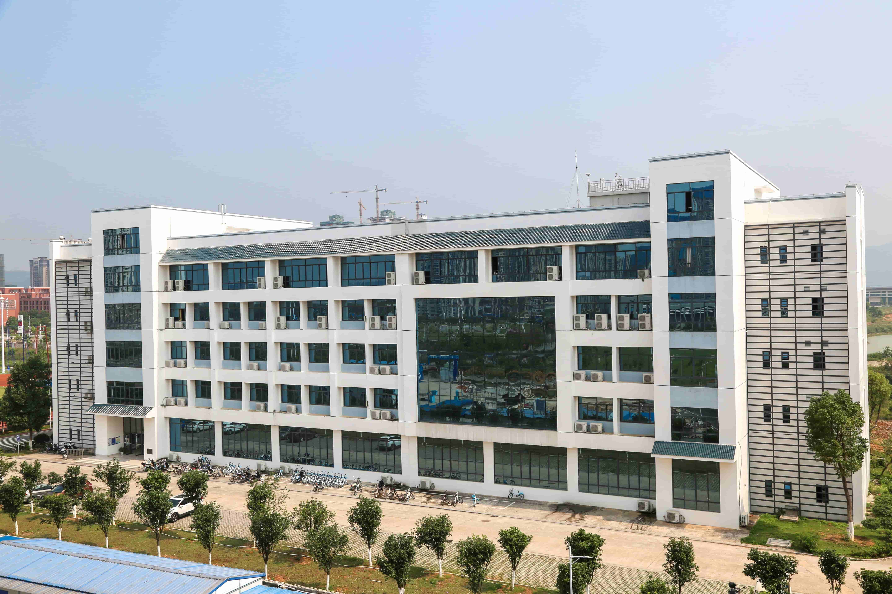

On this site
This work has 1 main page, 7 secondary pages and 6 tertiary pages respectively in Chinese and English.。
The secondary pages are looking back at the past, the mission of The Times, China today, splendid rivers and mountains, romantic figures, looking forward to the future, about us;
The third level page is mainly looking back at the past hundred years of glorious course, respectively for one hundred years of glory, the creation of heaven and earth, the change of heaven and earth, earth-shaking, earth-shaking, precious experience.
Copyright statement
Some of the content of this website, including text, pictures, audio, video, programs, as well as page layout design, is collected online. If you have any conflict with a person, team or organization, please contact us through the contact information below the website. Thank you for your cooperation.
Visitors may use the content or services provided by the Website for personal study, research or appreciation, as well as other non-commercial or non-profit purposes, provided that the content or services shall comply with the provisions of the copyright law and other relevant laws and shall not infringe on the legal rights of the Website and related rights holders. In addition, any use of any content or services on the Website for other purposes shall be subject to written permission of the website and relevant rights holders.
Our ideals
"Young people should shoulder the historical mission, forge ahead with confidence, set high aspirations, be bright and virtuous, become talented and shoulder great responsibilities, and strive to become a new generation worthy of the task of national rejuvenation. Let them blossom in their unremitting efforts for the motherland, the nation, the people and mankind."
Since the 18th NATIONAL Congress of the CPC, the CPC Central Committee with Comrade Xi Jinping at its core has taken a strategic position of ensuring that the cause of the Party and the people is passed on from generation to generation, and has lovingly cared for the growth and success of young people, charting the way forward for youth work in the new era. A series of important statements on youth work issued by General Secretary Xi Jinping have lofty ideas, rich connotations and profound thoughts. They have clarified major theoretical and practical issues concerning youth work in the new situation and pointed out the historical mission and growth path of contemporary youth. To accurately grasp the basic requirements and key tasks of youth work, and guide young people to have lofty ideals, love the great motherland, shoulder the responsibilities of The Times, have the courage to work hard, hone their skills, and temper their moral integrity, It is of great significance to encourage and mobilize young people to study hard and work hard to achieve the "Two Centenary Goals" and realize the Chinese dream of national rejuvenation.
About us
We come fromGXSTNUFaculty of Mathematics and Computer Science.

GXSTNU is a state-funded full-time undergraduate university, a national Language and writing promotion base, and a national registered mass creative space.
It is a national "1+ X" certificate pilot university, one of the first pilot universities in China's "100 Universities Project" according to the Ministry of Education, and a member of The Alliance of China's Applied Technology Universities (Colleges).
It is a demonstration teacher education base in Guangxi Zhuang Autonomous Region, a teacher training base in Guangxi Vocational Education and a collaborative innovation center for teacher education at the autonomous region level.
Guangxi Key Laboratory of Green Preparation and Application of Inorganic Materials, Guangxi Sugar Resources Engineering Technology Research Center; Guangxi Science and Technology Department and laibin Municipal People's government jointly built the school;
It has cooperated with Beijing Zhongguancun Software Park, Tsinghua University Qidi Holding Company, Zhongke Shuguang, Xindao Technology and other national-level well-known enterprises in running schools.